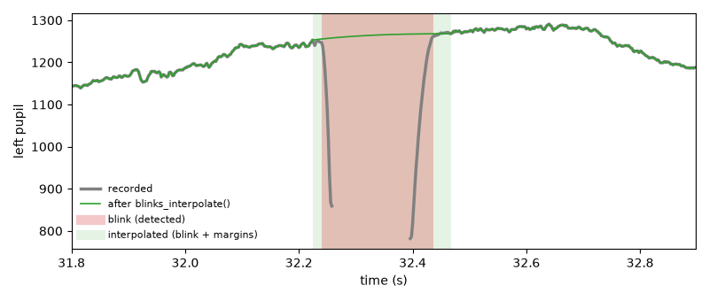
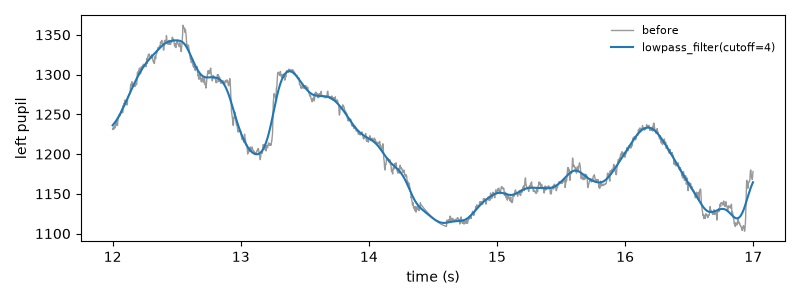
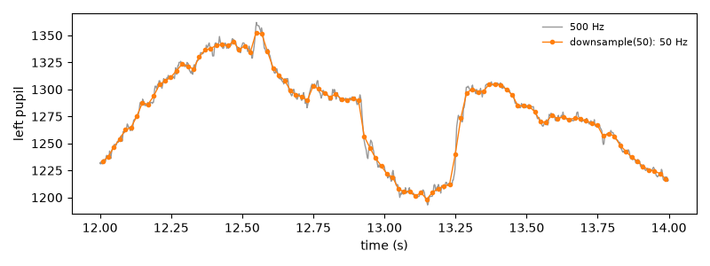
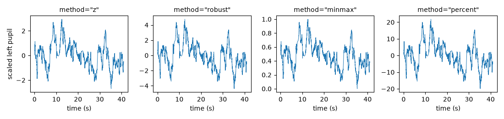
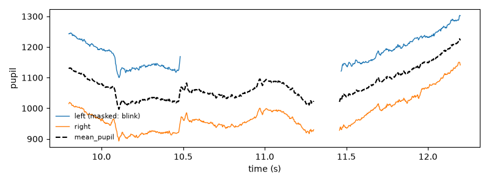

Preprocessing#
Raw pupil data usually contain blinks, other artifacts and high-frequency
noise. This page lists the tools for dealing with them. All methods
process all eyes by default (use eyes= to select) and can be combined
into a pipeline with | (see Data objects).
Visual checks are an important part of preprocessing. Look at the data
before and after each step (see Plotting). To tune parameters, use
tweak() (see Interactive tools): it shows the result while you
change them.
Data quality#
Before and after preprocessing, quality_report()
summarizes the quality of a dataset (missing data, noise, blinks, artifacts,
calibration) and labels each measure “good”, “ok”, “poor” or “bad”. See
Data quality.
d.quality_report()
Blinks#
During a blink, the eye tracker loses the pupil. Pupil size usually drops to zero or is missing, and the samples just before and after the blink are distorted as the eyelid covers the pupil.
Detect blinks in the pupillary signal using several strategies. |
|
Merge blinks that are close together. |
|
Interpolating blinks in the pupillary signal. |
|
Get blinks as a dict of Intervals (one per eye/variable). |
|
Get the interpolated stretches as a dict of Intervals (one per eye/variable). |
|
Return statistics on blink durations. |
|
Plot detected blinks in separate subplots. |
A typical sequence is
d = d | (pp.pupil.blinks_detect()
| pp.pupil.blinks_merge_close(distance=100 * u.ms)
| pp.pupil.blinks_interpolate())
blinks_detect() finds missing samples and sharp
drops in the pupil’s velocity profile. The detected blinks are stored in the
object (the "blink" layer, which masks them) and the object is
returned (d.pupil.blinks_detect() works in place). Check them with
get_blinks() (a dict with one Intervals
per channel, in ms); d.clear_layer("blink") removes them again.
blinks_interpolate() replaces the pupil size during
blinks by a smooth curve (Mathôt, 2013). Interpolated samples are used by
all later steps (filters, segments, statistics); they keep the
"interpolated" layer, so they can be left out with
policy="strict" (see Missing data).
One blink, before and after: the pupil size drops and is then missing while the eye is closed; the detected blink (red) is extended by a margin on each side and replaced by a smooth curve (green):

Blinks differ a lot between participants, and checking the result for each participant is worth the effort. The tutorial Blink preprocessing shows how.
Other artifacts#
For gaze data, samples off the screen and samples where the two eyes point to very different places are usually artifacts:
Detect and mask gaze coordinates that fall outside the screen boundaries. |
|
Calculate Euclidean distance between left and right eye coordinates and detect divergences. |
mask_offscreen() needs the screen size (see
set_experimental_setup() and Gaze data and the experimental setup).
Any stretch of data can be masked or interpolated from an
Intervals object, e.g., periods you marked as bad by hand:
Apply Intervals as masks to selected data. |
|
Interpolate data within specified intervals. |
|
Convert masks to Intervals objects. |
|
Merge masks of all variables into a single joint mask. |
Filtering and downsampling#
Pupil size changes slowly. A low-pass filter at about 4 Hz removes noise without distorting the signal (Jackson & Sirois, 2009). Downsampling reduces the amount of data, e.g., for modeling.
Lowpass-filter pupil signal using a Butterworth-filter. |
|
Apply smoothing of the signal using a moving window. |
|
Simple downsampling scheme using mean within the downsampling window. |
The filters only use the usable samples: masked samples (e.g., blinks that were not interpolated, or zero-coded blinks) are bridged linearly for the filter and keep their values, so they do not leak into their neighbours. Interpolating blinks before filtering gives a better bridge than a straight line.
downsample() averages the samples within each new
sampling interval (masked samples are left out), so filter before
downsampling to a rate close to the frequencies of interest.
A 4 Hz low-pass filter removes the fast noise:
d = pp.get_example_data("rlmw_002_short") | pp.pupil.blinks_detect() | pp.pupil.blinks_interpolate()
filtered = d.pupil.lowpass_filter(cutoff=4, inplace=False)
sel = (d.tx >= 12000) & (d.tx < 17000)
fig, ax = plt.subplots(figsize=(8, 3))
ax.plot(d.tx[sel] / 1000, d["left_pupil"][sel], color="0.6", lw=1, label="before")
ax.plot(d.tx[sel] / 1000, filtered["left_pupil"][sel], color="C0", lw=1.5,
label="lowpass_filter(cutoff=4)")
ax.set(xlabel="time (s)", ylabel="left pupil")
ax.legend(frameon=False, fontsize=8)
fig.tight_layout()

Downsampling to 50 Hz keeps the slow changes of the pupil:
d = pp.get_example_data("rlmw_002_short") | pp.pupil.blinks_detect() | pp.pupil.blinks_interpolate()
low = d.downsample(50, inplace=False) # 500 Hz -> 50 Hz
fig, ax = plt.subplots(figsize=(8, 3))
for obj, style, label in [(d, dict(color="0.6", lw=1), "500 Hz"),
(low, dict(color="C1", marker="o", ms=3, lw=1), "downsample(50): 50 Hz")]:
sel = (obj.tx >= 12000) & (obj.tx < 14000)
ax.plot(obj.tx[sel] / 1000, obj["left_pupil"][sel], label=label, **style)
ax.set(xlabel="time (s)", ylabel="left pupil")
ax.legend(frameon=False, fontsize=8)
fig.tight_layout()

Scaling#
Pupil size is measured in arbitrary units that depend on the eye tracker and the setup. To compare participants, the data are often scaled:
Scale the signal: subtract center and divide by scale. |
|
Scale back to original values using either values provided as arguments or the values stored in params["scale"] by |
scale() subtracts a center and divides by a scale, both
computed from the usable samples of each channel. method chooses them:
d.scale("pupil") # z-scores (mean and SD)
d.scale("pupil", method="robust") # median and MAD: units of the MAD
d.scale("pupil", method="minmax") # between 0 and 1
d.scale("pupil", method="percent") # % change from the mean
The robust scaling uses the raw median absolute deviation (not multiplied
by 1.4826), so artefacts that were not removed have little influence. The
values that were used are stored with the object (d.params["scale"]),
and unscale() undoes the scaling. For a percent change
relative to a baseline before each event, see
seg.pupil.baseline_correct(window, method="percent")
(Events, intervals and segments).
All methods keep the shape of the signal and change only its units (the y-axes):
d = pp.get_example_data("rlmw_002_short") | pp.pupil.blinks_detect() | pp.pupil.blinks_interpolate()
fig, axes = plt.subplots(1, 4, figsize=(11, 2.6), sharex=True)
for ax, method in zip(axes, ["z", "robust", "minmax", "percent"]):
s = d.scale("pupil", method=method, inplace=False)
ax.plot(s.tx / 1000, s["left_pupil"], lw=0.7)
ax.set_title(f'method="{method}"', fontsize=10)
ax.set_xlabel("time (s)")
axes[0].set_ylabel("scaled left pupil")
fig.tight_layout()

Combining the eyes#
With binocular data, the two eyes can be combined into one signal that is less noisy and has fewer gaps:
Merge pupil data from both eyes into a new eye (default |
|
Merge data from both eyes into a single variable. |
merge_eyes() corrects for a (slowly changing)
difference in pupil size between the eyes and fills samples missing in one
eye from the other (recorded samples come before interpolated ones). The
result is stored as mean_pupil (eye "mean"; another name with
name=); it keeps the layers that both eyes have in common, e.g.,
"blink" and "interpolated" where both eyes blinked.
merge_eyes() simply averages any variable. See
Processing monocular and binocular data.
Where the left eye is masked during a blink, the merged pupil continues from the right eye, shifted by the difference between the eyes, so it has no jump and no gap:
d = pp.get_example_data("rlmw_002_short") | pp.pupil.blinks_detect()
d.pupil.merge_eyes() # adds "mean_pupil"
sel = (d.tx >= 9800) & (d.tx < 12200)
t = d.tx[sel] / 1000
fig, ax = plt.subplots(figsize=(8, 3))
ax.plot(t, d["left_pupil"][sel], color="C0", lw=1, label="left (masked: blink)")
ax.plot(t, d["right_pupil"][sel], color="C1", lw=1, label="right")
ax.plot(t, d["mean_pupil"][sel], color="k", lw=1.5, ls="--", label="mean_pupil")
ax.set(xlabel="time (s)", ylabel="pupil")
ax.legend(frameon=False, fontsize=8, loc="lower left")
fig.tight_layout()

Selecting and cleaning up data#
Crop the data to the time range from start to end. |
|
Remove the data in the given periods (e.g., breaks) and join the rest. |
|
Resets time so that time t0 becomes time zero. |
|
Drop specified eyes and/or variables from the data. |
|
Drop original dataset from record (e.g., to save space). |
|
Find gaps in the time-vector and fill them in. |
|
Make and return a deep-copy of the eyedata object. |
crop() cuts out a time range, e.g., one block
of the experiment: d.crop(3 * u.min, 5 * u.min).
remove_intervals() removes periods
in the middle, e.g., breaks, and joins the rest: the time vector and the
events after a removed period are shifted back, so that there are no gaps.
reset_time() makes the time vector start at zero
(or at any other time).
drop_data() removes eyes or variables, e.g.,
d.drop_data(variables=["x", "y"]) keeps only the pupil data; masks,
blinks, events, the experimental setup and all other data are kept. Like
all transforming methods, it works in place unless inplace=False is
given (or set as the default, see Settings and logging).
References#
Jackson, I., & Sirois, S. (2009). Infant cognition: going full factorial with pupil dilation. Developmental Science, 12(4), 670–679. https://doi.org/10.1111/j.1467-7687.2008.00805.x
Mathôt, S. (2013). A simple way to reconstruct pupil size during eye blinks. figshare. https://figshare.com/articles/A_simple_way_to_reconstruct_pupil_size_during_eye_blinks/688001